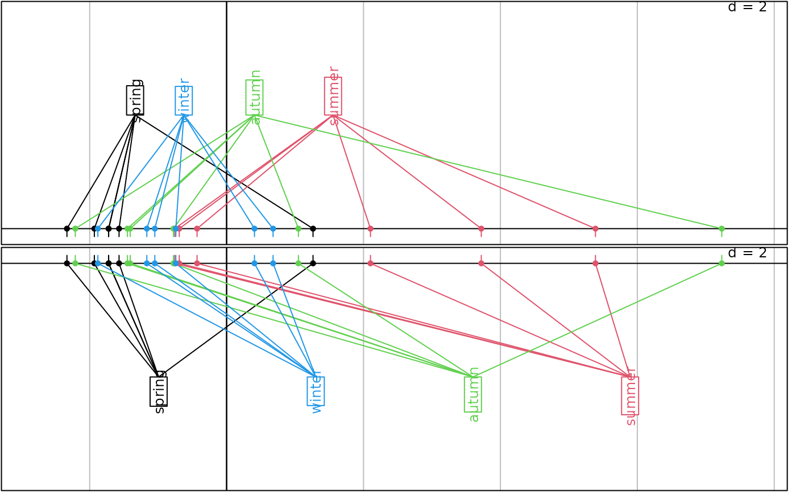
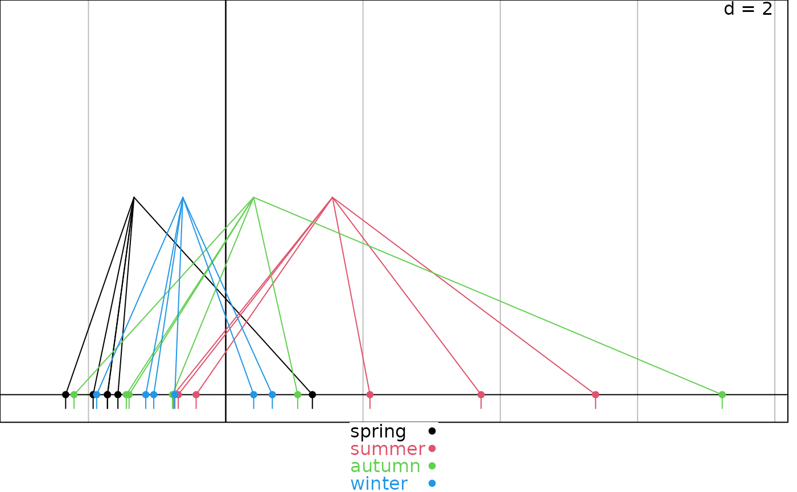

1-D plot of a numeric score partitioned in classes (levels of a factor)
s1d.class.RdThis function represents the link between scores values and their matching labeled classes.
Arguments
- score
a numeric vector (or a data frame) used to produce the plot
- fac
a factor (or a matrix of factors) to split
score- wt
a vector of weights for
score- labels
the labels' names drawn for each class
- at
a numeric vector used as an index
- poslabel
the label position of each class (each level of
fac), it can beregularorvalue. Ifregular, labels are evenly spaced. Ifvalue, labels are placed on the weighted mean of their class.- col
a color or a colors vector for points, labels and lines according to their factor level. Colors are recycled whether there are not one color by factor level.
- facets
a factor splitting
scoreso that subsets of the data are represented on different sub-graphics- plot
a logical indicating if the graphics is displayed
- storeData
a logical indicating if the data are stored in the returned object. If
FALSE, only the names of the data arguments are stored- add
a logical. If
TRUE, the graphic is superposed to the graphics already plotted in the current device- pos
an integer indicating the position of the environment where the data are stored, relative to the environment where the function is called. Useful only if
storeDataisFALSE- ...
additional graphical parameters (see
adegparandtrellis.par.get)
Details
The weighted means of class are available in the object slot stats using object@stats$means.
Graphical parameters for rugs are available in plines of adegpar.
Some appropriated graphical parameters in p1d are also available.
Value
An object of class ADEg (subclass S1.class) or ADEgS (if add is TRUE and/or
if facets or data frame for score or data frame for fac are used).
The result is displayed if plot is TRUE.
Author
Alice Julien-Laferriere, Aurelie Siberchicot aurelie.siberchicot@univ-lyon1.fr and Stephane Dray
Examples
data(meau, package = "ade4")
envpca <- ade4::dudi.pca(meau$env, scannf = FALSE)
g1 <- s1d.class(envpca$li[, 1], meau$design$season, poslabel = "value", col = 1:4, plot = FALSE)
g2 <- s1d.class(envpca$li[, 1], meau$design$season, poslabel = "regular", col = 1:6,
p1d.reverse = TRUE, plot = FALSE)
ADEgS(c(g1, g2), layout = c(2, 1))

g3 <- s1d.class(envpca$li[, 1], meau$design$season, poslabel = "value", col = 1:4,
plabels.cex = 0, key = list(space = "bottom"))
